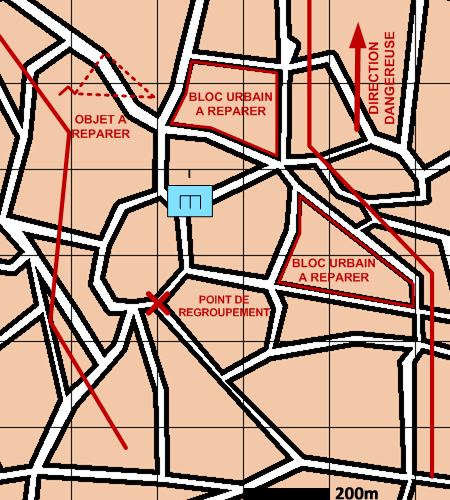

NIVEAU : Automate
ARME : GENIE
MISSION : Reparer
NIVEAU : Automate
ARME : GENIE
MISSION : Reparer
Schéma de modélisationRéparer |
Paramètres obligatoiresFuseauZone de responsabilité. Point de regroupement Le point à rejoindre en fin de mission. Chantiers (parmi les suivants) Bloc Urbain Bloc Urbain à réparer. Objet Objet à réparer. |
|
Paramètres optionnelsLimas [LDM/LFM] pour orienter le fuseauDirection Dangereuse : Orientation privilégiée des capteurs lors de bond ou de reconnaissance de points |
||
 |
Fiches missions |  |